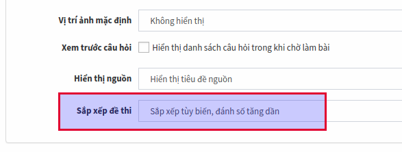
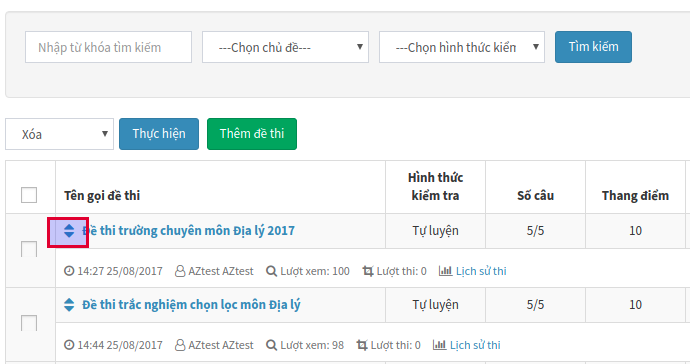
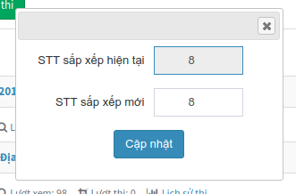

Mặc định, AZtest hiển thị danh sách đề thi theo thời gian tạo đề. Đề mới nhất sẽ hiển thị lên trước. Nếu bạn muốn tùy ý thay đổi vị trí của đề thi, hướng dẫn dưới đây sẽ giúp bạn thực hiện điều đó.
Bước 1: Thay đổi cấu hình sắp xếp đề thi
- Truy cập ACP / Trắc nghiệm (Menu dọc) / Cấu hình
- Tìm Sắp xếp đề thi, thay đổi thành Sắp xếp tùy biến, đánh số tăng dần
- Nhấn Cập nhật để lưu cấu hình

Bước 2: Tùy chỉnh vị trí sắp xếp đề thi
- Truy cập ACP / Trắc nghiệm (Menu dọc) / Đề thi. Lúc này, trước tiêu đề đề thi sẽ xuất hiện icon sắp xếp

- Tìm đến đề thi muốn thiết lập vị trí, click vào icon sắp xếp, thay đổi giá trị phù hợp tại STT sắp xếp mới, nhấn Cập nhật để lưu thay đổi

Nguyên tắc sắp xếp
- Sắp xếp theo thứ tự ưu tiên từ 1, tăng dần
- Do đó, nếu muốn một để thi được hiển thị đầu tiên, đánh số 1